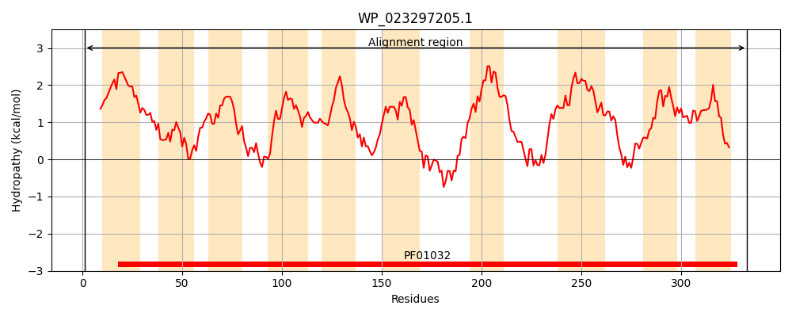
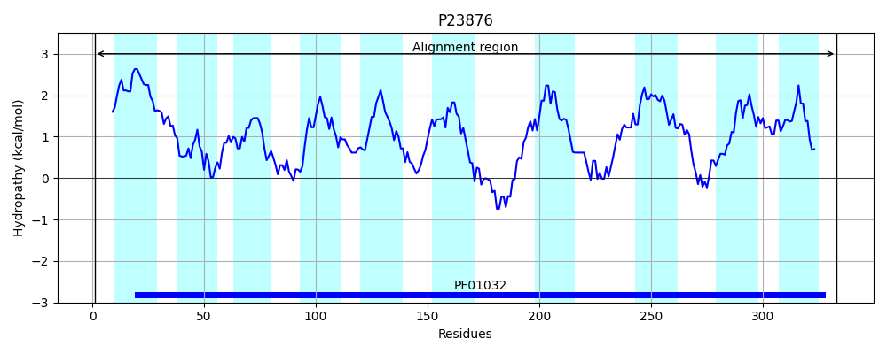
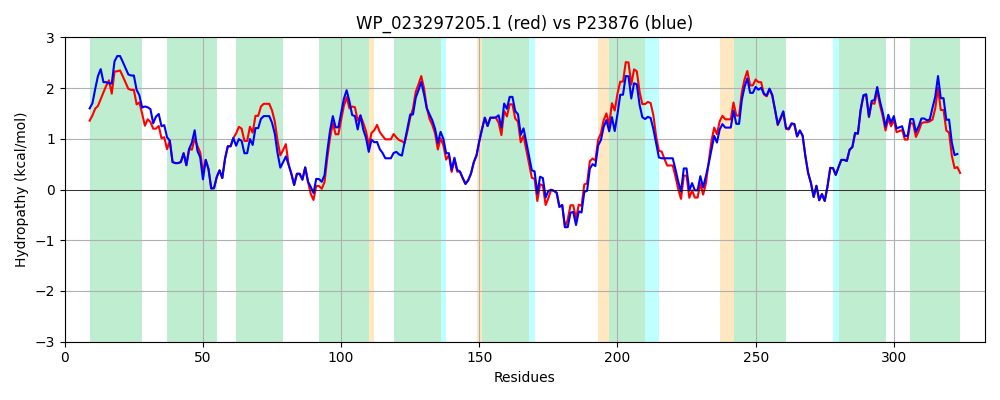

Hit Accession: P23876
Hit TCID: 3.A.1.14.2
Hit Description: gnl|BL_ORD_ID|9459 gnl|TC-DB|P23876|3.A.1.14.2 Ferric enterobactin transport system permease protein fepD - Escherichia coli.
Mach Len: 333
e:0.000000
Query TMS Count : 10
Hit TMS Count: 10
TMS-Overlap Score: 9.150000
Predicted Substrates:CHEBI:28199;ferrienterobactin(3-)
BLAST Alignment:
Score: 1420 , Bit scores: 551 bits, E-value: 0.0e+00, Alignment length: 333, Percentage identity: 86
Query: 1 MSFSTTAVRSVAVPGLLLLLALAAALSLTIGAKSLPIGTVFTAFSGTCQSADCTIVLDARLPRTLAGLLAGVALGLAGALMQTLTRNPLADPGLLGVNSGASFAIVLGAALFGITSPQEQLLLAFCGALCASLLVAFTGSQGGGQLSPVRLTLAGVALAAVLEGLSNGIALLNPDVYDQLRFWQAGSLDIRTLQTLKIVLLPVVIAGIAALLLSRALNSLSLGNDTATALGSRVARTQLIGLIVITVLCGSATAVVGPIAFIGLMMPHMARWLVGADHRWSLPVTLLATPALLLFADVIGRLLVPGELRVSVVSAFLGAPVLIWLVRRQPRGG 333
MS S R++AVPGLLLLL +A ALSL IGAKSLP V AFSGTCQSADCTIVLDARLPRTLAGLLAG ALGLAGALMQTLTRNPLADPGLLGVN+GASFAIVLGAALFG +S QEQL +AF GAL ASL+VAFTGSQGGGQLSPVRLTLAGVALAAVLEGL++GIALLNPDVYDQLRFWQAGSLDIR L TLK+VL+PV+IAG ALLLSRALNSLSLG+DTATALGSRVARTQLIGL+ ITVLCGSATA+VGPIAFIGLMMPHMARWLVGADHRWSLPVTLLATPALLLFAD+IGR++VPGELRVSVVSAF+GAPVLI+LVRR+ RGG
Sbjct: 1 MSGSVAVTRAIAVPGLLLLLIIATALSLLIGAKSLPASVVLEAFSGTCQSADCTIVLDARLPRTLAGLLAGGALGLAGALMQTLTRNPLADPGLLGVNAGASFAIVLGAALFGYSSAQEQLAMAFAGALVASLIVAFTGSQGGGQLSPVRLTLAGVALAAVLEGLTSGIALLNPDVYDQLRFWQAGSLDIRNLHTLKVVLIPVLIAGATALLLSRALNSLSLGSDTATALGSRVARTQLIGLLAITVLCGSATAIVGPIAFIGLMMPHMARWLVGADHRWSLPVTLLATPALLLFADIIGRVIVPGELRVSVVSAFIGAPVLIFLVRRKTRGG 333 | Protein Hydropathy Plots: |
|---|
|  |  |
Pairwise Alignment-Hydropathy Plot:
|
|---|
|  |